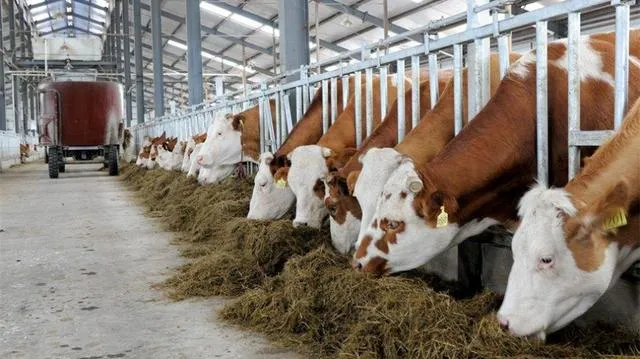

近年来，河南畜牧生产规模不断扩大，生猪、肉牛、奶牛、家禽、肉羊五大优势产业发展迅速，肉类、禽蛋、奶类产量稳居全国前列，是名副其实的“畜牧大省”。
但同时，我省畜牧业也面临着大而不强、结构不优等发展难题。如何提高标准化规模养殖程度，做大做强优势品牌，加快推动畜牧业高质量发展？如何实现由“畜牧大省”向“畜牧强省”转变？针对这些问题，近期我省出台的《关于加快畜牧业高质量发展的意见》（以下简称《意见》）给出了明确答案。
绿色化发展是出路
位于兰考县的河南花花牛农牧科技有限公司奶牛养殖基地，目前存栏荷斯坦良种奶牛1600头。7月16日，记者来到这里发现，整个养殖基地环境整洁、空气清新，并没有粪污等刺鼻难闻的味道。
该公司总经理赵戬道出了其中缘由：“近年来，我们致力于打造集有机奶牛养殖、生态循环牧草种植于一体的种养结合生态农牧基地。围绕牧场周边发展苜蓿种植，实现粪污还田、饲草供应，既有效缓解养殖场粪污处理难、饲草料采购紧张的状况，也改善了养殖场脏乱差的形象。”
畜牧业产生的大量畜禽粪污，已经成为农村环境治理的一大难题。然而，畜禽粪污又是农业活动中重要的肥料来源。着力促进畜禽粪污资源化利用，成为畜牧业转型升级的内在要求。
对此，《意见》指出，我省畜牧业要大力推进绿色化发展，到2025年，畜禽粪污资源化利用率达85%以上。同时，优化产业布局，科学划定、调整禁养区，引导畜禽养殖向环境承载能力大的区域转移。出台畜禽养殖业污染防治技术规范，加强畜禽养殖业污染防治。大力推广节水、节粮等清洁养殖工艺，控制臭气排放。
“《意见》明确的要求，再次表明我们努力的方向对了。”赵戬高兴地说，这将坚定畜牧养殖企业继续走绿色化发展道路的信心。
省农科院畜牧研究所所长徐照学同样认为，畜禽粪污资源化利用是实现畜牧业向绿色生产转变的根本出路，把保护生态环境摆在优先位置，将绿色要求融入畜牧业发展全过程，将有助于促进生产生态协调发展。
规模化养殖为导向
标准化规模养殖是有效抵御风险、提升畜牧业竞争力的“金钥匙”。为此，《意见》明确，到2025年，我省畜禽规模化养殖率要达80%以上，主要畜种规模养殖基本实现全程机械化。同时，要加快建设现代化养殖基地，重点发展年出栏生猪5000头、肉牛500头、肉鸡5万只、肉羊3000只和存栏奶牛300头、蛋鸡1万只以上的规模养殖场；推广“公司+农户”等模式，发展养殖合作组织，以大带小，扩大养殖规模。
“河南发展规模化畜牧业的条件太好了，土地多、平原多，和长江以南比，我们一个市的养殖用地甚至超过一个省的养殖用地。”牧原集团董事长秦英林说。
据介绍，截至2019年年底，我省生猪、奶牛、蛋鸡、肉鸡规模养殖比例分别达到70.8%、59.4%、69.7%、78.3%，尤其是生猪规模养殖比重高出全国20个百分点，全省万头以上猪场达到454家，5万头以上96家。省农业农村厅相关负责人表示，作为全国畜牧业大省，河南一直高度重视畜牧业规模化和现代化发展，加快大中型养殖场发展，加快培育新型经营主体，相关工作取得了积极成效。《意见》明确的规模化养殖目标，释放出积极信号，为进一步提升我省畜牧业质量效益和竞争力奠定了基础。
全链条融合是方向
今年受疫情影响，我省畜牧业遭受不同程度冲击，也显现了一些突出问题。从生产端来看，农产品生产本身具有高风险，但现如今对大数据、云计算等科技手段运用还不够。此外，畜牧业只依靠合作社、农户等开展规模化经营，很难实现更大规模的经济效益和社会效益。
《意见》提出，要推进畜牧业“三链”同构，延伸产业链、提升价值链、打造供应链，实现一二三产业融合发展，为今后我省畜牧业高质量发展指明方向。
“从农村产业方面说，畜牧业这几年对农村经济发展带动作用较大。我省很多经营主体实行‘公司＋农户’的模式，促进了农民就业增收。”省社科院农村发展研究所副所长、研究员陈明星认为，除了依靠合作社、农户外，要强化农业龙头带动作用。对于县域来说，根据自身特色、发展基础，培育带动力强的龙头企业非常关键。如果每个县能有一个龙头企业，就能带动相关产业链条的发展，促进更多农民增收。
畜牧业涉及养殖、运输、屠宰、深加工等多个环节，陈明星建议，地方政府应培育引导当地的产业链条，在产业链、价值链、供应链上发力，更好地促进一二三产业融合发展。而作为微观主体的企业也应该在质量控制、追溯体系、品牌经营、业态创新等方面下功夫。
文章来源：河南日报